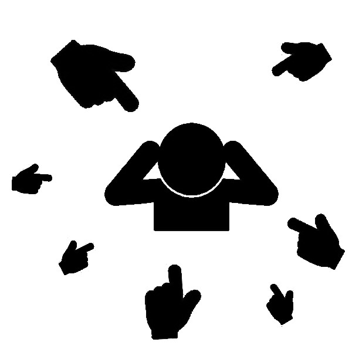
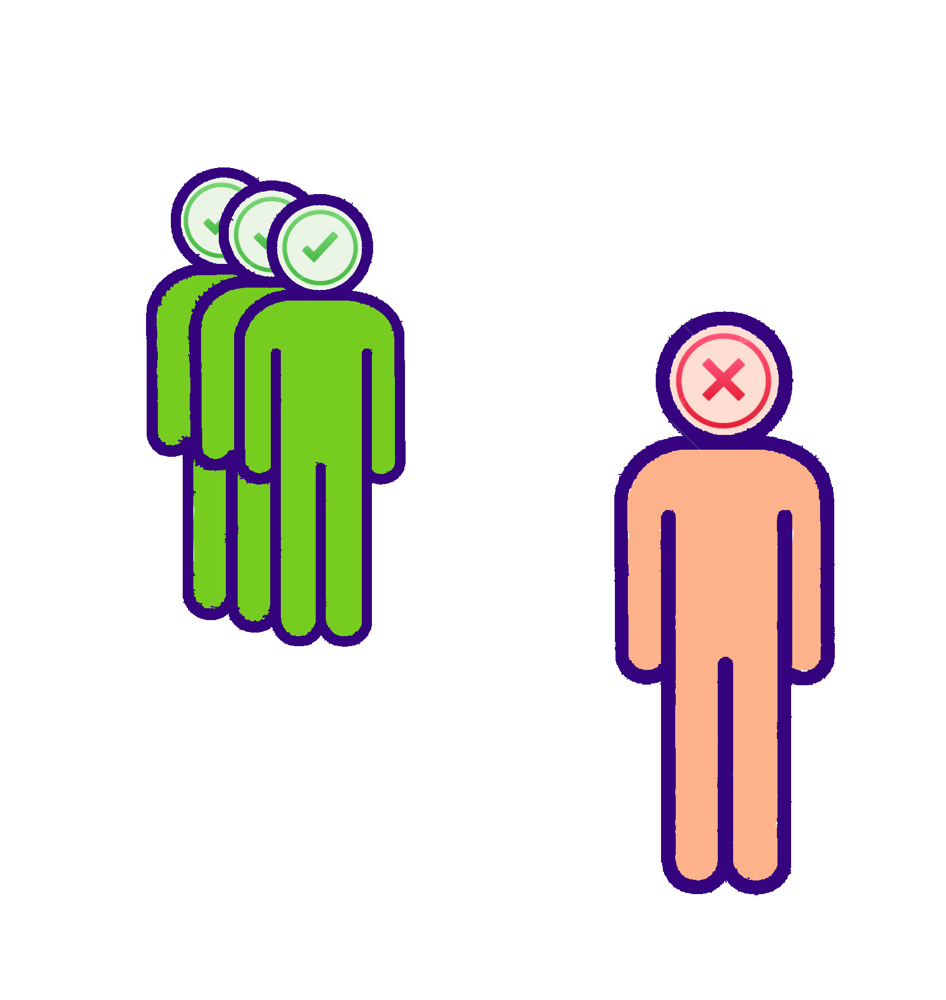
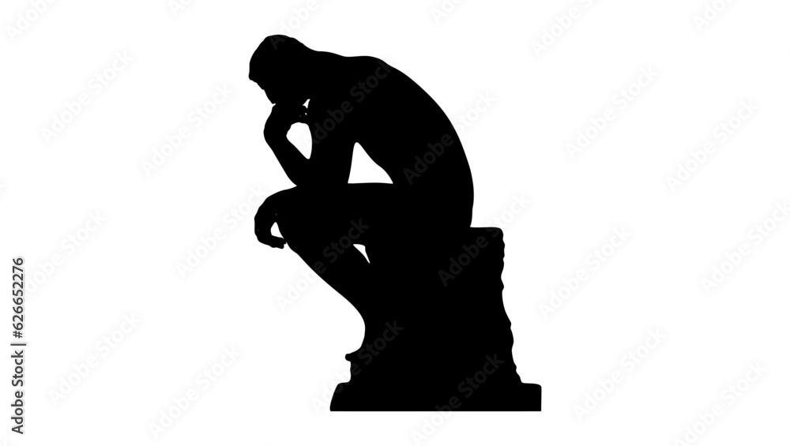
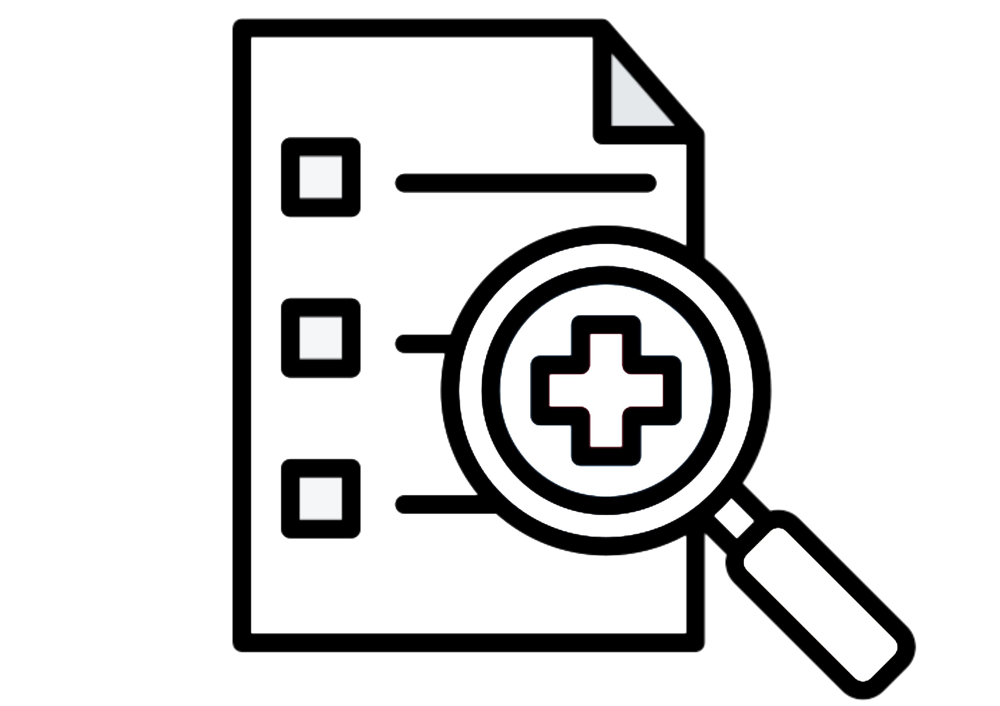
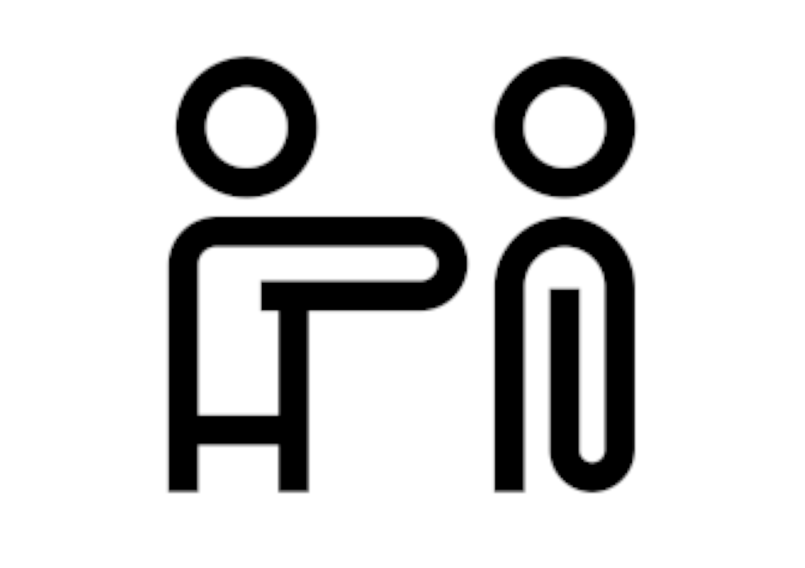
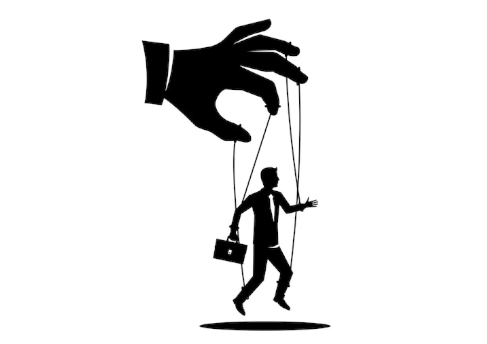
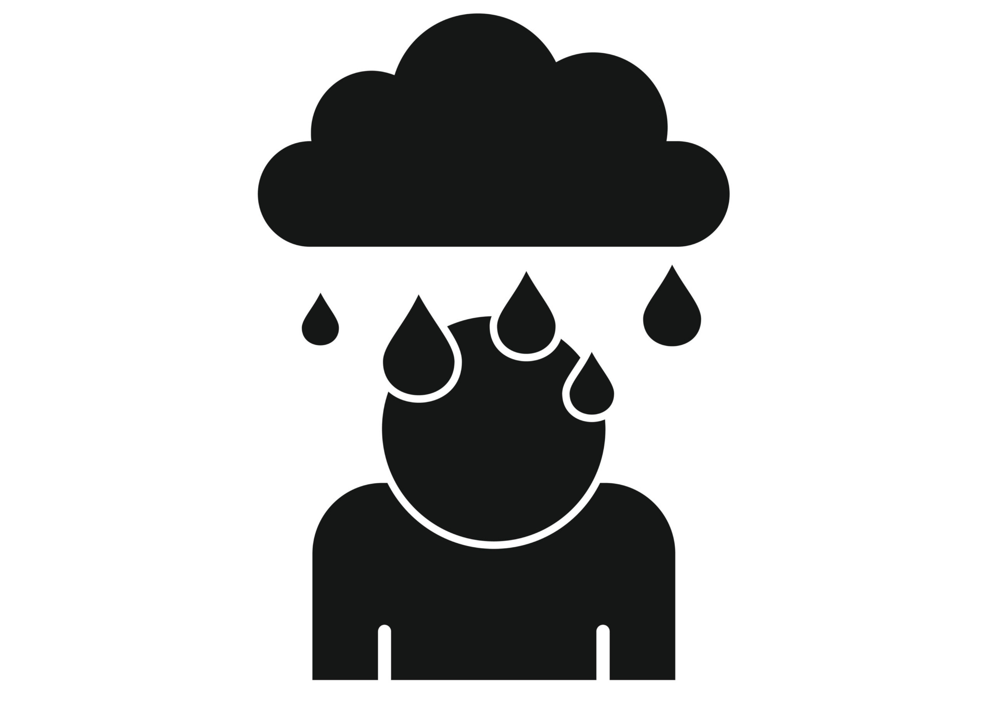
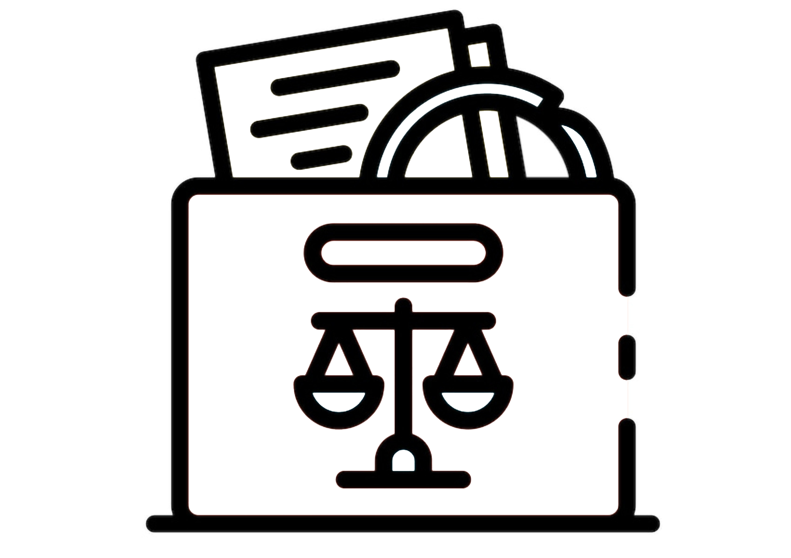
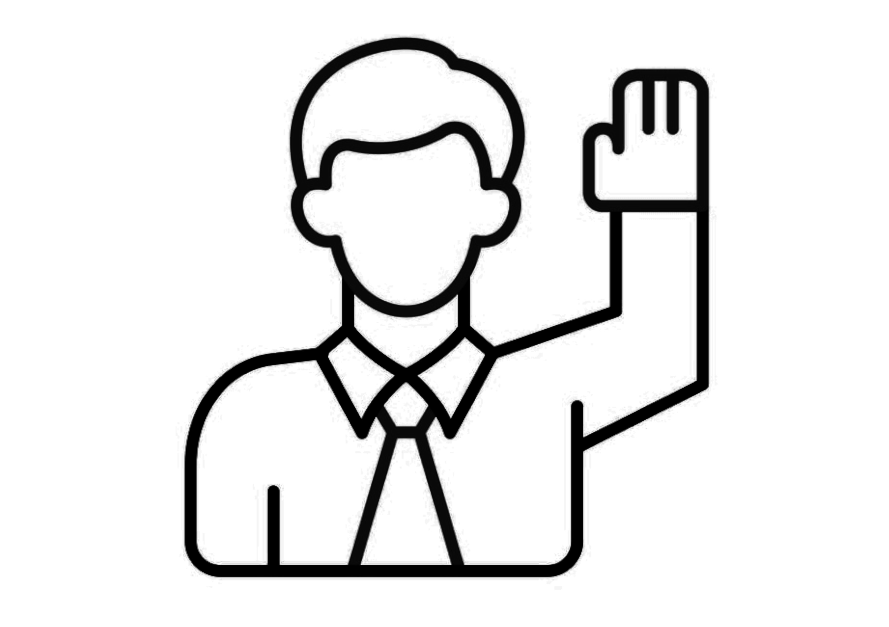
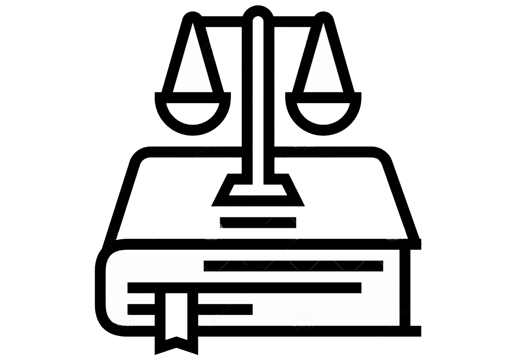

Acharnement continu
Harcèlement moral continu et ciblé depuis >1,5 an, attesté par description détaillée des faits.
Voir document →Ici mes ressources et observations de la période d'acharnement

Harcèlement moral continu et ciblé depuis >1,5 an, attesté par description détaillée des faits.
Voir document →
Isolement professionnel et discrédit intentionnel (refus de parler, exclusion des tâches).
Voir document →Collègues refusant d'assurer la salle d'étude, pénalisation des étudiants.
Voir document →
Listes de présence déplacées, clés/documents manquants, portes manipulées.
Voir document →
Liste horodatée 4→10 mai 2026 montrant manipulation volontaire d'éléments de travail.
Voir document →
Reproches publics (propreté/entretien) alors que Rachid n'était plus responsable/présent.
Voir document →
Direction créditant systématiquement les auteurs présumés et ignorant les plaintes de Rachid.
Voir document →
Point de rupture documenté — justifie l'urgence et la gravité de la situation.
Voir document →
Saisine personne de confiance, conseiller prévention, SPF Emploi — démarche sérieuse et déterminée.
Voir document →
Déclaration signée attestant que les faits sont présentés sincèrement et volontairement formalisés.
Voir document →
Loi du 4 août 1996 (bien-être au travail) et CCT n°72 — légitime la saisine des autorités compétentes.
Voir document →